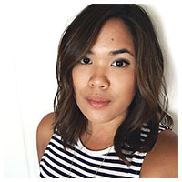

I'm an Interactive Designer currently working in Washington, DC at PBS.
I'm passionate about design and getting users the best experience possible. I spent the better part of her childhood overseas, living in the Philippines, Pakistan and El Salvador before moving to the States.
I have previously worked for WillowTree Apps, Tech Cocktail, and Time Warner Cable's RR.com. I also co-founded TEDxUVA.
My obsessions include late 90s/early 2000s hip-hop and R and B, tennis, music festivals, deep-fried anything and sriracha on everything.
